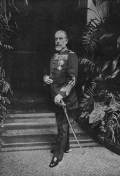
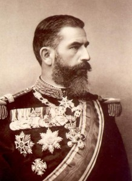

© Muzeul Național Peleș


 printați
printați
+40244 310 918 |
peles.ro@gmail.com |
Regele Carol I
|  | În anul 1866, când Brătianu îi oferă coroana României lui Carol, acesta se afla la Coburg, în calitate de căpitan în Regimentul 1 dragoni din gardă. Avea reputaţia unui ofiţer distins şi era considerat un exemplu de virtute atât în viaţa personală, cât şi în cea publică. Carol I s-a născut la 20 aprilie 1839, la Sigmaringen în Germania, fiind al doilea fiu al Prinţului Carol-Anton de Hohenzollern şi al Josephinei, fiica Marelui Duce de Baden. Din anul 1857 a urmat Şcoala de Artilerie şi Geniu din Berlin, participând şi la audierea unor cursuri de literatură franceză şi istorie a artei la Universitatea din Bonn (1863), sub îndrumarea esteticianului Anton Springer. Cunoaşte o ascensiune militară rapidă: este înaintat la gradul de sublocotenent în 1857 şi la cel de căpitan în 1866. În anul 1864, a participat ca voluntar în armata Prusiei, la Războiul împotriva Danemarcei, experienţă memorabilă, pe care avea s-o repete în 1877-1878 şi în 1913. |
În timpul desfăşurării Războiului pentru Independenţă a avut comanda armatei de Vest (38000 militari români şi 52000 militari ruşi) şi a coordonat operaţiile de încercuire şi nimicire a grupării comandate de Osman Paşa la Plevna. S-a pronunţat pentru păstrarea integrităţii şi apărarea Independenţei, cu prilejul desfăşurării preliminariilor Congresului de Pace de la Berlin, din vara lui 1878. La 14 martie 1881, Parlamentul îl proclamă în unanimitate pe Carol I, ca Rege al României. Festivităţile de Incoronare au avut loc la 10 mai 1881. În Raportul Consiliului de Miniştri se sublinia: “România, constituită în Regat, completează şi încoronează opera regenerării sale. Ea îşi dă un nume, care este în acord cu poziţiunea ce a dobândit ca stat independent”. Încoronarea lui Carol I şi a soţiei sale, Elisabeta, s-a desfăşurat la Bucureşti. Coroana purtată cu acest prilej de Carol I fiind turnată din oţelul unui tun otoman capturat de armata română la Plevna, în noiembrie 1877. Coroana de oţel avea o adâncă semnificaţie, anume aceea de a ,,ratifica” dreptul României ,,de a merge pe propria cale, de a căuta singură alianţe şi a hotărî ea însăşi politica“, aşa cum era evidenţiat într-un articol dintr-un cotidian austriac.
n octombrie 1883, Regele Carol I a favorizat încheierea Tratatului politico-militar secret dintre România şi Austro-Ungaria, la care au aderat ulterior Germania şi Italia. Acest Tratat constituia singura soluţie a momentului pentru a contracara o eventuală ofensivă a Rusiei împotriva României. Politica externă a ţării noastre la sfârşitul secolului al XIX-lea şi începutul secolului al XX- lea, promovată de Regele Carol I, a urmărit consolidarea independenţei şi apărarea integrităţii teritoriale. România a urmărit să rămână cât mai mult cu putinţă în afara unui conflict european, obiectivul lui Carol I fiind plasarea neutralităţii ţării sub protecţia Triplei Alianţe. La Consiliul de Coroană desfăşurat la Castelul Peleş, la 3 august 1914, Regele Carol I a acceptat, în conformitate cu interesele ţării, adoptarea de către România a unei poziţii de neutralitate armată, a expectativei armate. |
 |
Vom sublinia doar câteva realizări, mai puţin cunoscute, ale României în timpul domniei lui Carol I: